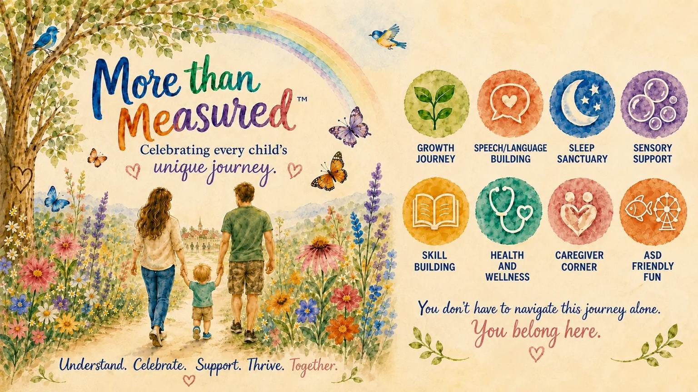
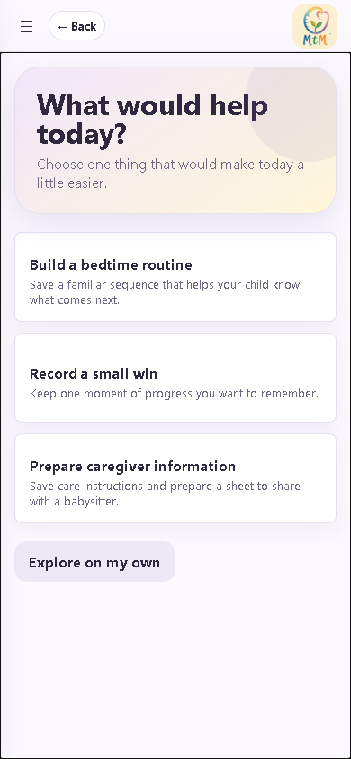
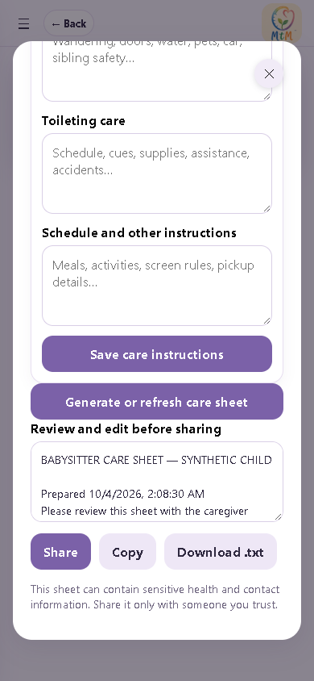

FOR THE EVERYDAY MOMENTS
More Than
Measured.
Routines, small wins, and shared care for families raising autistic and neurodivergent children.
Build a bedtime routine, remember a moment of progress, and keep instructions together for the people who share your child's care. Families with other support needs are welcome too.
Free 7-day household trial. No card required. No automatic charge. Afterward, choose $12.99/month or $99.99/year.

KNOW BEFORE YOU SIGN UP
One household. Shared care.
A household brings your family's profiles, routines, and care information together. Invite the people you trust instead of creating separate copies.
Free account
Create an account and verify your email. Create your family's household, or join an existing household using an invitation. Joining uses that household's existing access.
Household access
Eligible households can start a free 7-day trial, with no card required and no automatic charge. Afterward, choose $12.99/month or $99.99/year. One household membership covers you and your spouse.
Babysitter registration is free, with parent-approved shared access. Subscribing starts paid access immediately; you can wait until the trial ends. Saved data is preserved when access ends and can be exported.
- Create a free account
- Verify your email
- Create or join a household
- Activate access if needed
- Save one useful thing
INSIDE MORE THAN MEASURED
Start with something useful.
Actual app screens with fictional test information.

Choose what helps today
Start with a bedtime routine, a small win, or caregiver information. You can also explore on your own.

Keep care information together
Record practical instructions for trusted caregivers. Add profile details when you need them.
START WHERE YOU ARE
What would help today?
Choose a familiar moment.
Take one useful idea with you.
A little more predictability.
Bedtime, meals, potty learning, and transitions.
Explore daily routines → 02 / CONNECTION & COMFORTMore ways to connect.
Communication, sensory needs, and play.
Explore connection → 03 / PLANNING TOGETHERFeel a little more prepared.
Outings, family safety, and caregiver handoffs.
Explore planning →FROM THE RESOURCE LIBRARY
Small places to begin.
Building a calmer bedtime routine
Use predictable steps, sensory clues and simple tracking to learn what helps bedtime go more smoothly.
Read the guide CommunicationSupporting communication beyond spoken words
Make room for gestures, signs, pictures, devices and speech while focusing on meaningful communication.
Read the guide CaregiversOrganizing the information everyone needs
Keep routines, medications, contacts, preferences and useful observations understandable to another caregiver.
Read the guideTHE APP · AVAILABLE NOW
A place for the things
that matter to your family.
More Than Measured brings routines, everyday observations, and caregiver information together—without reducing a child to a score or milestone.
Download MTM for Android on Google Play or Windows from the Microsoft Store, or open the web app today. Create an account and start a seven-day household trial without a card. You can also save the web app to your Home Screen on iPhone, iPad, and Android. The Apple App Store version has been developed and is awaiting Apple's approval through the App Store review process.
Growth & small wins
Room for progress that follows its own path.
Communication & routines
A clearer picture of what helps day to day.
Caregiver connection
Useful information for the people who share the care.
GET THE APP
Keep More Than Measured close by.
Now available for Android on Google Play and Windows in the Microsoft Store. The Apple App Store version is complete and awaiting Apple's approval for release. Meanwhile, use the web app on iPhone and iPad with the Home Screen instructions below.
iPhone or iPad · Safari
- Open the live app in Safari.
- Tap Share. If needed, tap the Page Menu first, then Share.
- Tap Add to Home Screen, turn on Open as Web App if shown, then tap Add.
Android · Google Play or Chrome
Get More Than Measured for Android on Google Play.
Get it on Google PlayPrefer the web app? Install it with Chrome:
- Open the live app in Chrome.
- Tap the three-dot menu and choose Install app or Install and create shortcut.
- Tap Install and follow the prompts.
Windows · Microsoft Store
Get More Than Measured from the Microsoft Store for your Windows computer.
Download for WindowsUse the same account for your synced household data on Google Play, Windows, and the web app. Your account will also carry over to the App Store version when it is released. Sign in with that account on each device to synchronize your data. Offline features are available after the web app completes its first online load; account, billing, and shared-data updates require a connection.